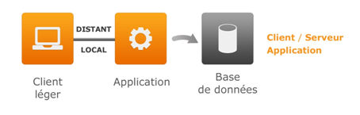

Architecture 3 tiers
Dans une architecture 3 tiers, la couche Présentation, la couche Application métier et la couche Base de données sont séparées :

En particulier, le processus qui exécute l'application est distinct du processus chargé de sa présentation. Ces deux processus peuvent s’exécuter :
Soit sur le même ordinateur, auquel cas l’installation s’apparente à une installation de type "client lourd".
Soit sur deux ordinateurs différents.
Le poste de l'utilisateur est de type "client léger". Il accède à des applications sur un ordinateur distant, appelé serveur d'applications.
La version 7 d'Harmony respecte cette architecture :
XrtDiva.exe est le processus chargé d’exécuter les applications Diva (Diva est le langage de programmation utilisé sous Harmony).
Xwpf.exe est le processus chargé de leur présentation.
En mode local, les deux processus s'exécutent sur le même ordinateur et dialoguent entre eux sans passer par le réseau.
Lorsqu'ils sont situés sur deux ordinateurs distincts, le client léger et le serveur d'applications dialoguent entre eux avec l'un des deux modes de transport suivants :
Le mode Socket.
Ce mode utilise le protocole TCP/IP et nécessite l’ouverture d’un port de communication TCP/IP entre le client et le serveur (le port numéro 1246 par défaut).
Sur le serveur d’applications, le service DhsTerminalServer attend les connexions des postes clients. Chaque client établit une session avec le serveur.
On utilisera ce mode lorsque les postes client se trouvent sur le réseau local ou sur un réseau privé virtuel (VPN).
Le mode Service Web.
Ce mode utilise le protocole SOAP, protocole ouvert qui permet les connexions par le réseau public Internet.
Le serveur Web de Microsoft IIS doit être installé sur le serveur d'applications.
On utilisera ce mode pour la connexion des postes nomades.
Les 3 modes peuvent cohabiter sur un même site.
Le client léger Xwpf
Le client léger Xwpf est un client riche. Il permet d’effectuer bon nombre d'opérations gérées habituellement par un client lourd.
En version 6, le processus XrtDiva assurait à la fois l'exécution des applications Diva et leur présentation à l'écran. En version 7, la partie présentation est exportée dans Xwpf.exe. Mais il ne s'agit pas simplement d'une séparation entre les deux couches. L’affichage des masques d’écran était auparavant basé sur la "vieille" interface Win32 du système d'exploitation Windows. Xwpf.exe utilise l'interface de Windows la plus récente, Wpf (Window Presentation Foundation).
Profils de connexion
Les profils de connexion permettent de configurer les modes de transport utilisés sur un site. L'utilisateur choisit le profil adapté dans les Options Avancées de la boîte de dialogue de connexion au serveur d'applications.
Profils utilisateur
Les Options de connexion Avancées spécifient les paramètres de connexion au serveur d'applications, l'environnement de travail de l'utilisateur, ainsi que ses préférences concernant par exemple le thème de couleurs, la couleur des polices par défaut, la langue d'affichage et d'impression. Tous ces paramètres sont enregistrés dans un "Profil utilisateur". L'utilisateur peut définir plusieurs profils s'il est amené à utiliser Divalto dans différents contextes (connexion à une base réelle ou à une base de test, connexion à différents serveurs d'applications, connexion en réseau local ou à distance, connexion en différentes langues, etc.). Une simple sélection du profil adéquat dans la liste de ses profils lui permet alors de retrouver tous les paramètres liés au contexte du moment.
Installation du serveur d'applications
Sur le serveur d'applications, il convient d'installer le produit "Harmony Power Foundation". Comme le client léger fait partie intégrante du produit, il n'y a pas lieu de l'installer pour un fonctionnement en mode local.
Installation du client léger
Le client léger doit être installé sur chaque poste client. Il s’installe de manière très simple, en quelques clics.
Attention : Si Harmony Power Foundation est déjà installé sur le poste client, il n’y a pas lieu d’y installer le client léger.
Installation du serveur de données
Sur le serveur de données, installez Harmony Power Foundation, le serveur Xlan (qui fait partie d’Harmony pour la version de démonstration), l’ERP infinity et éventuellement la visite guidée, les sources, le connecteur pour Outlook.
En version 7, l’accès aux données s’effectue par deux canaux :
Le serveur Xlan, pour tous les accès par les fonctions Diva de gestion des fichiers (fichiers séquentiels-indexés et bases SQL). Xlan accède à la base de données SQL par le driver ODBC de la base de données cible (Microsoft SQL Server, Oracle ou IBM DB2).
Le connecteur SQL, pour tous les accès par les méthodes des "RecordSQL"
(en particulier, les Zooms SQL utilisent tous ce canal).
Compatibilité avec les versions antérieures d'Harmony
La version 7 d'Harmony assure une compatibilité ascendante avec les versions 6.
Elle permet d’exécuter les programmes de ces versions (remarquez que la plupart des utilitaires d'Harmony, dont le menu Harmony, s'exécutent encore en version 6). Elle permet également de produire des objets compatibles avec les versions 6 en précisant la version cible dans les profils de compilation de Xwin6.
Bien entendu, les applications de la version 6 sont toujours entièrement gérées par le processus XrtDiva. L’affichage des masques d’écran de ces applications fait donc toujours appel à l'ancienne interface Win32 de Windows.